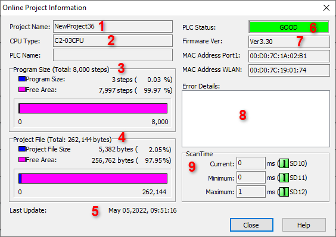

Topic: CL091

| Online Project Information |
Topic: CL091
|

1 Project Name: Displays the Name of the Project stored in the PLC.
2 CPU Type: Displays the CPU Type of the connected CLICK PLC.
3 Program Size: Shows the Total Program Size used for the current Project in number of Steps and Percentage. As shown on this item, the Program allows a Total of 8,000 Steps. This portion of the window also shows the amount of Steps and Percentage still available for Programming.
4 Project File: Shows the Total Project Size of the current Project in Bytes and Percentage. As shown on this item, the Project Memory Size is 262,144 bytes. This portion of the window also shows the amount of Bytes and Percentage of Memory still available for this Project.
5 Last Update: Displays the Date and Time that the shown Status Information was last Updated.
6 PLC Status: Shows the current Status of the PLC. The Status will display with one of the following colors:
7 Firmware Ver: Displays the current Firmware Version of the connected CLICK PLC.
8 Error Details: When a Warning or Error are detected and displayed on the PLC Status field (Item 6), this field displays the current Warning and/or Error. See PLC Error Codes List for details.
|
|
Note: This information is not displayed if the Project file is not Stored in the CLICK PLC. |
|
9 Scan Time: Displays the current Scan Times for the connected CLICK PLC.